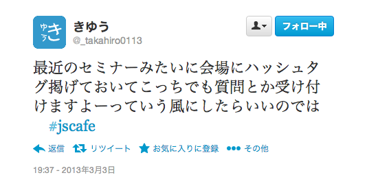

JsCafe vol.3
Chapter4 繰り返し利用するコードを一箇所にまとめる
Created by Shintaro Katafuchi / @hotchemi
This slide made by reveal.js
Agenda
- 関数とは
- 関数定義における4つの注意点
- 変数はどの場所から参照できるか ‐スコープ‐
- 引数情報を管理する ‐argumentsオブジェクト‐
- 高度な関数のテーマ
- +α
#jscafe
自己紹介


最近のJavaScriptへの興味
- クライアントサイドJSへのテスト →QUnit､mocha､PhantomJS…
- Node.js
某日､JsCafeのハードルを下げる為発表を決意
二週間後…
俺関数の事何にも分かってなかった

お手柔らかにお願いします
そろそろ話します

その前に一つ
Chrome developer tool

REPL:Read-Eval-Print-Loop
その場でコード書いて確かめよう
4-1 関数とは
関数とは
･引数と呼ばれるデータを受け取り、定められた通りの処理を実行して結果を返す一連の命令群。
･一度の定義だけでプログラムら何度も呼び出し実行することができるJavaScriptのコード部分｡
関数定義の方法
- fucntion命令(関数宣言文)
- 関数リテラル(関数式)
- Functionコンストラクタ
fucntion命令(関数宣言文)
function 関数名(引数1, 引数2, ...) {
実行される処理1;
実行される処理2…;
[return hoge;]
}
- return省略時はundefinedを返却
- 仮引数は関数内部でのみ参照可能
- 末尾にセミコロン不要
関数リテラル(関数式)
var 関数名 = function (引数1, 引数2, ...) {
実行される処理1;
実行される処理2…;
[return hoge;]
};
- 関数を変数に代入する
- 右辺の関数自体は名前を持たない →匿名関数､無名関数
Functionコンストラクタ
var 関数名 = new Function(引数1, 引数2…, 実行する処理);
- Functionオブジェクトのコンストラクタを利用
- eval
- while/for内で使わない
- グローバルスコープのみを提供する
- 普通使わない
4-2 関数定義における4つの注意点
returnは途中で改行しない
- JavaScriptはASI(自動セミコロン挿入)機構を持つ
- 意図しない戻り値を返却する可能性がある
- break/continueも同様
var triangle = function(base, height) {
return
base * height / 2;
};
// ↓こうなる
return;
base * height / 2;
関数はデータ型の一種
- 関数とは参照データ型(オブジェクト)
- 関数を定義するとは｢変数に関数リテラルを代入する事｣と同義
var triangle = function(base, height) {
return base * height / 2;
};
// 右辺の関数がそのまま出力される
console.log(triangle);
function命令は静的な構造を宣言する
console.log('三角形の面積：' + triangle(5,2));
function triangle(base, height) {
return base * height / 2;
}
- 関数宣言文はコードをコンパイルするタイミングで関数を登録する →どこからでも呼び出すことが可能
- 関数リテラルの書式で上記を実行すると実行時エラー(TypeError)になる →変数宣言のみ関数の先頭にホイストされる
var globalVal = 'Global';
(function() {
console.log(globalVal); // (1)
var globalVal = 'Local';
console.log(globalVal); // (2)
})();
- (1)と(2)はそれぞれどう出力されるか
- 関数リテラルも同じ
4-3 変数はどの場所から参照できるか-スコープ-
変数はどの場所から参照できるか
- JavaScriptのスコープはグローバルスコープとローカルスコープ
- グローバル変数…全体から参照できる
- ローカル変数…定義された関数内で参照できる
- ブロックスコープは存在しない (JavaScript1.7でlet)
function getValue() {
scope = 'Local Variable';
return scope;
}
console.log(getValue()); // Local Variable
console.log(scope); // Local Variable
- varをつけない変数は全てグローバル変数になる
- ブロックスコープは存在しない →with使うならやらない方がマシ
ローカル変数の有効範囲
変数宣言はスコープの先頭に巻き上げ(ホイスト)されるので気をつけようという話
仮引数のスコープ
var value = [1, 2, 4, 8, 16];
function deleteElement(value) {
value.pop();
return value;
}
console.log(deleteElement(value));
console.log(value);
- 基本型と参照型に注意｡
- 参照型の場合はメモリ上のアドレス情報を共有する
- 結果として同じオブジェクトを変更する事になる
関数リテラルとFunctionコンストラクタ
4-4 引数情報を管理する‐argumentsオブジェクト‐
function showMessage(value) {
console.log(value);
}
showMessage();
showMessage('山田');
showMessage('山田', '鈴木');
引数のデフォルト値を設定
function triangle(base, height) {
if (base == undefined) { base = 1; }
if (height == undefined) { height = 1; }
return base * height / 2;
}
console.log(triangle(5));
可変長引数の定義
function sum() {
var result = 0;
for (var i = 0; i < arguments.length; i++) {
var tmp = arguments[i];
if (isNaN(tmp)) throw new Error('指定値が数値ではありません：' + tmp);
result += tmp;
}
return result;
}
argumentsオブジェクトのプロパティ
- arguments.length →実際に渡された引数の個数を表す
- arguments.callee →関数の再起呼び出し
- arguments.caller →現在実行している関数を呼び出した関数を追える
※calleeとcallerはECMAScript5で非推奨
arguments.callee
function factorial(n) {
if (n != 0) { return n * arguments.callee(n - 1); }
return 1;
}
console.log(factorial(5));
arguments.caller
function myFunc() {
if (arguments.caller == null) {
return ("The function was called from the top!");
} else
return ("This function's caller was " + arguments.caller);
}
console.log(myFunc());
4-5 高度な関数のテーマ
名前付き引数
$(function() {
$('#lake-img').lake({
'speed': 1,
'scale': 0.5,
'waves': 10
});
});
- 要するにオブジェクトを引数渡す
- jQueryのオプションとかでよく見るやつ
- 引数が多くなった場合に理解しやすい
高階関数
- 関数の引数に関数を渡す
- 関数はデータ型 →関数の引数として渡したり戻したりできる!!!
function each(s, e, func) {
for (var i = s; i <= e; i++) {
func(i);
}
}
each(1, 10, function(n) {
console.log(n);
});
- 処理の大枠はそのままに詳細な実装を差し替えることができる
- 再利用しない関数は匿名関数で定義すると良い感じになる
スコープチェーン
- スクリプト実行時にGlobalオブジェクトが生成される →グローバル変数やグローバル関数はGlobalオブジェクトのプロパティ
- 関数呼び出し時にもActivatonオブジェクト(Callオブジェクト)が生成される 関数内で定義されたローカル変数を管理する為の便宜的オブジェクト
- スコープチェーンとはGlobalオブジェクトとCallオブジェクトが生成順に連結したリスト

- JavaScriptはスコープチェーンの先頭から変数を検索し､最初に見つかった値を採用する
- 変数名が重複した場合は上記の規則で解決される

クロージャ
- ローカル変数を参照している関数内関数？
- 関数を実行時､関数が定義されたときに有効であった変数スコープを使う(レキシカルスコープ)
- 関数呼び出し時のスコープチェーンが保持される
function closure(init) {
var counter = init;
return function() {
return ++counter;
}
}
var myClosure = closure(1);
console.log(myClosure());
console.log(myClosure());
console.log(myClosure());
- closureの戻り値である無名関数がローカル変数counterを保持し続けている
- 無名関数への参照が存在している間はスコープチェーンが保持され続ける
- GCの対象にならない
function closure(init) {
var counter = init;
return function() {
return ++counter;
}
}
var myClosure1 = closure(1);
var myClosure2 = closure(100);
console.log(myClosure1());
console.log(myClosure2());
- Callオブジェクトは関数呼び出しの都度生成される為counterは共有されない
クロージャはシンプルなオブジェクト
+α
- 即時関数
- Functionオブジェクトのプロパティ
- メモ化とかカリー化とか書こうとしたけど時間無かった…
即時関数
(function(a,b){alert(a+b)})("hoge","piyo")
- 定義した関数をその場で実行する
Functionオブジェクトのプロパティ
- length 関数に実際に渡された引数の個数
- prototype プロトタイプオブジェクトを参照
- call､apply コンテキストを指定して関数を呼び出す
- toString